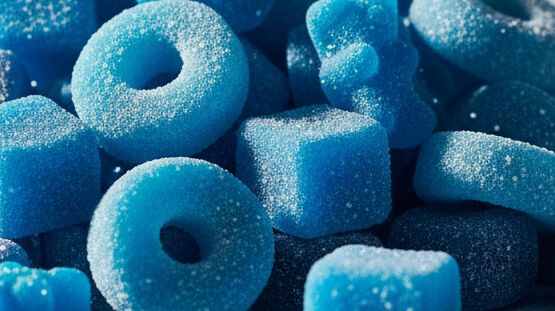
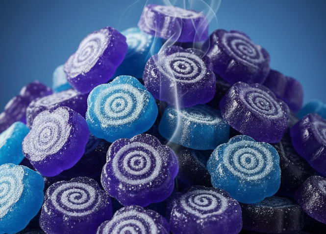
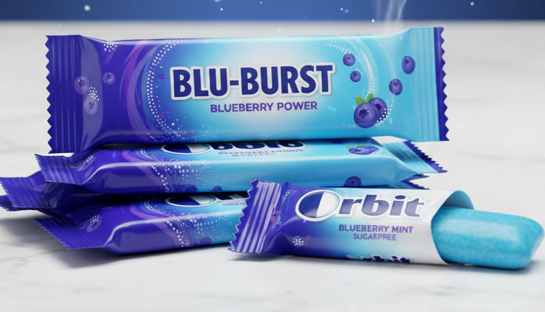
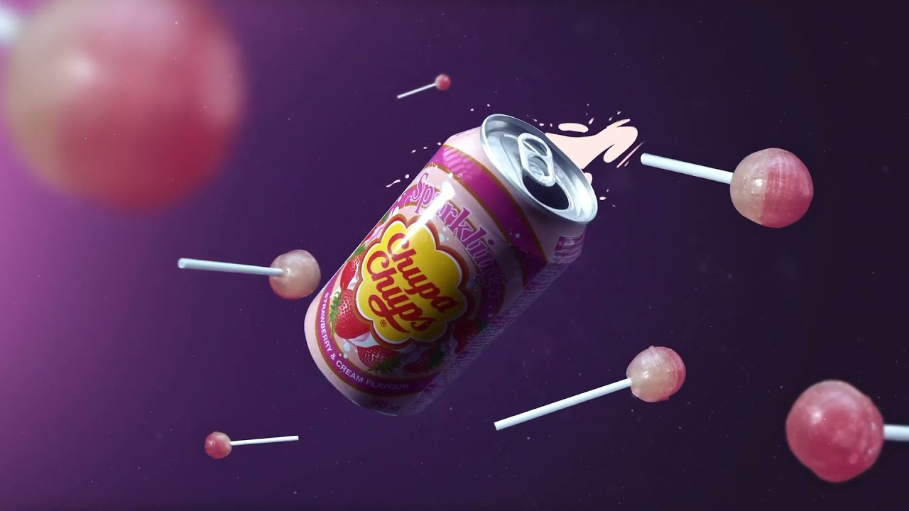

AZUL - ARÁNDANO
ARÁNDANO
EL SABOR MÁS MISTERIOSO, FRUTAL Y EXÓTICO DEL MUNDO DE LAS CHUCHES.

DESCRIPCIÓN
El sabor arándano destaca por su mezcla perfecta entre dulzor suave y un toque ácido característico. Su tono azul vibrante lo convierte en uno de los sabores más llamativos y originales. Cada bocado recuerda a frutos del bosque y deja una sensación afrutada y agradable que lo hace único.
CURIOSIDADES SOBRE EL ARÁNDANO
- No es un sabor tan común, lo que lo hace especial en bolsas surtidas.
- Los arándanos reales son antioxidantes muy potentes.
- El color azul en chuches se asocia a magia y fantasía.
- Existen variedades más dulces y otras más ácidas según su origen.
PERFIL DE SABOR DETALLADO
| ATRIBUTO | VALOR | DESCRIPCIÓN |
|---|---|---|
| Dulzor | ⭐⭐⭐⭐ | Dulzor afrutado sin resultar empalagoso. |
| Acidez | ⭐⭐⭐ | Un equilibrio perfecto entre dulce y ácido. |
| Intensidad aromática | ⭐⭐⭐⭐ | Aroma de frutos del bosque muy presente. |
| Suavidad | ⭐⭐⭐⭐ | Textura suave y muy agradable al masticar. |
TIPOS DE CHUCHES DE ARÁNDANO
- Gominolas: clásicas y con un color azul intenso.
- Caramelos duros: sabor más concentrado y duradero.
- Chicles afrutados: mezcla entre fresco, dulce y ácido.
- Piruletas azules: llamativas y muy populares entre niños.




OPINIONES DE CONSUMIDORES
Rafa (★★★★★): “Un sabor diferente, afrutado y muy rico.”
Paula (★★★★): “Me encanta su toque ácido y el color tan llamativo.”
David (★★★★★): “Mi preferido cuando quiero algo dulce pero no demasiado
intenso.”